Observation de la localisation d'Anderson en cavité micro-ondes quasi-2D
Institut Langevin
-
12 mai – 17 juillet 2014
Stagiaire
Encadrant
Alexis Prel
Patrick Sebbah
Étudiant à l'UPMC
Directeur de recherche au CNRS
Licence 3 Mention Physique
Institut Langevin − Ondes et images
Parcours Fondements de la physique
Thème Optique Mésoscopique et Théorique
1. Contexte du stage
Du 12 mai 2014 au 18 juillet 2014 j'ai été accueilli par Patrick Sebbah au sein de l'Institut Langevin pour un stage de 10 semaines portant sur la localisation d'Anderson.
L'Institut Langevin
Situé 1 rue Jussieu, à deux pas de l'université Pierre et Marie Curie, l'institut Langevin « Ondes et Images » partage ses locaux avec l'Institut de Physique du Globe de Paris. Il est affilié à l'ESPCI Paristech, au CNRS, à l'Inserm, à Paris Sciences Lettres, à l'université Pierre et Marie Curie et à l'université Paris Diderot.
Ses thèmes de recherche portent sur l'étude des ondes en général, qu'elles soient de nature mécanique ou électromagnétiques, et incluent notamment l'étude et le contrôle de la propagation des ondes, la mise au point de systèmes d'imageries et l'application de phénomènes ondulatoires à la médecine [a].
L'équipe d'accueil
Le stage consistait à observer la localisation d'Anderson, qui intéresse Patrick Sebbah, en employant une méthode développée par Matthieu Dupré et Geoffroy Lerosey.
Je me suis donc trouvé à travailler avec les deux équipes.
L'équipe de Patrick Sebbah s'intéresse d'une manière générale à la propagation d'ondes électromagnétiques dans des milieux désordonnés. Notamment à l'interaction entre ondes élastiques et résonateurs sub-longueur d’onde et à l'interaction lumière-matière dans des matériaux désordonnés complexes [b]. On trouve entre autres parmis ces thématiques la localisation d'Anderson et le contrôle de lasers aléatoires.
Celle de Geoffroy Lerosey s'intéresse à la propagation d'ondes de tout type dans des milieux complexes.
En particulier l'étude de nouveaux matériaux composites qui permettent de forcer les ondes à emprunter certains chemins, sur des échelles petites devant la longueur d'onde -métamatériaux et cristaux- et l'étude de méthodes permettant, dans un environnement donné, de contrôler la propagation des ondes, en travaillant sur les ondes émises dans le milieu.[c]
Remerciements
Tous ces gens avec qui j'ai travaillé m'ont consacré une large part de leur temps pourtant précieux et je souhaite les en remercier.
En particulier mon directeur de stage, Patrick Sebbah, qui m'a donné beaucoup de liberté dans la réalisation du montage malgré mon manque d'expérience et a toujours su me débloquer lorsque je sollicitais son aide.
Également Matthieu pour m'avoir particulièrement aidé, entre autres avec la prise en main de Matlab, de l'analyseur de réseau, du contrôle des axes motorisés, du traitement des résultats, ... Marc pour ses nombreuses explications toujours claires et ses astuces Matlab, Geoffroy pour ses solutions parfois inattendues, Nicolas pour sa patience (et il en fallait) à me montrer les simulations numériques, Abdel pour avoir gentiment accepté d'usiner le support malgré son emploi du temps chargé et Patricia pour son aide à trouver du matériel.
Merci enfin à tous ceux qui ont fait une pause dans leur travail pour m'expliquer leurs sujets de recherche.
2. Sujet du stage
2.1 La localisation d'Anderson
On parle de localisation d'une onde lorsque celle ci, au lieu de se propager depuis la source, reste confinée dans une région de l'espace. Ce concept s'applique aussi bien aux ondes acoustiques telle la déformation transversale d'une corde excitée mécaniquement, qu'aux ondes électromagnétiques, comme les micro-ondes, ou optiques, comme la lumière visible.
On peut toujours définir la longueur de localisation ξ, qui correspond à la longueur caractéristique de la région dans laquelle l'onde parvient à se propager. Si L est la taille du système, on est en régime localisé pour ξ << L.
La localisation d'Anderson en particulier intervient lorsque le milieu de propagation est désordonné.
Ce qui fait le désordre d'un milieu peut prendre différentes formes mais en toute généralité, il s'agit d'une distribution d'impédance irrégulière dans le milieu de propagation.
Par exemple, une masse attachée sur une corde est un désordre local car elle constitue une variation d'impédance : la propagation d'une onde dans ce milieu s'en trouvera perturbée. Pour une onde électromagnétique, les variations d'impédances peuvent correspondre à une variation de l'indice de réfraction du milieu n, directement lié à la permittivité ε = n1/2. Dans le cas général la vitesse de propagation de l'onde n'est pas la même en tous point de l'espace : le milieu est dit désordonné.
Dans le cas étudié au cours de ce stage, des cylindres de permittivité ε <<ε0 constituent des diffuseurs pour l'onde qui parcoure la cavité : si un diffuseur se trouve sur le passage d'une onde, la propagation de celle ci sera perturbée et l'onde résultante ne poursuivra pas sa propagation dans une direction unique mais sera diffusée dans toute les directions, avec une profil d'intensité I(θ) caractéristique du diffuseur.
À 1D , le moindre désordre induit toujours des modes localisés à des fréquences données car il crée une fréquence de résonance locale (par exemple le segment entre deux masses attaché à une corde aura une fréquence propre pour laquelle il sera seul à vibrer, pour plus d'informations consulter [1] ). Il s'avère que ce phénomène se produit également pour des répartitions aléatoires de diffuseurs à deux dimensions.
C'est ce dernier cas que nous avons cherché à observer.
Système physique
Le système consiste ainsi en une distribution aléatoire à deux dimensions de cylindres en céramique, de très forte constante diélectrique (ε = 37 ε0 ). Cette distribution est choisie telle que des modes localisés se forment dans une certaine gamme de fréquence.
Les travaux précédents [2 & 3] sur lesquels le stage s'appuyait ont montré qu'obtenir une telle distribution était possible en choisissant intelligemment la fréquence de travail (cf. section 3.1) et en fixant une distance d'exclusion entre les centres des diffuseurs,, ce qui permet de laisser suffisamment d'espace entre les diffuseurs pour qu'un mode se forme. La position des diffuseurs est ensuite tirée aléatoirement par l'ordinateur.
Une paroi de la cavité est « fermée » si elle est constitué de conducteur, qui réfléchi les ondes électromagnétiques. Si elle est constitué d'isolant, il y aura tout de même une variation d'impédance dû au changement de milieu et la paroi réfléchira une partie des ondes vers l'intérieur et en transmettra une autre vers l'extérieur.
Dans notre cas, on ferme les parois inférieures et supérieures, que l'on rapproche autant que possible afin que l'onde ne se propage que suivant deux dimensions, mais l'on ouvre au maximum les côtés (parois latérales) afin que les réflexions ne viennent pas perturber les modes localisés au centre.
Un exemple d'application : le laser aléatoire
Dans un laser classique, une onde est confinée par deux miroirs dans un milieu qui, excité par l'onde, va émettre un rayon monochromatique aux propriétés dictées par les caractéristiques du système.
L'équipe de Patrick Sebbah mène beaucoup de recherche sur la caractérisation de lasers aléatoires, où ce confinement peut être assuré non plus par des miroirs mais par la localisation des ondes dans le milieu aléatoirement désordonné. Ce genre de laser a la même cohérence fréquentielle que ceux classiques, mais pas la même cohérence spatiale, puisqu'il émet dans toutes les directions.
Pour plus d'informations, consulter l'article de vulgarisation [5].
Observation en cavité micro-ondes
Dans les travaux précédemment réalisés par [2 & 3], une méthode d'observation du champ avait été développée en introduisant une bille métallique dans la cavité. Celle ci était déplacée à l'intérieur de la cavité (voir fig 2.2) et introduisait une perturbation du champ qui était mesurable et permettait d'en déduire l'intensité du champ initial. Cette méthode, bien que très efficace (voir en fig 2.1 la concordance entre résultats expérimentaux et numériques) s'avère assez complexe et ne permet pas de cartographier le champ au niveau des diffuseurs eux mêmes.
2.2 Les réseaux de diffractions comme paroi semi réfléchissante
En cavité parfaitement fermée, il est en principe impossible de mesurer le champ depuis l'extérieur. Comme expliqué ci-avant, mesurer le champ depuis l'intérieur en introduisant un dispositif de mesure dans la cavité présente des désavantages et une complexité dont on désire s'affranchir.
Une méthode avait été mis en place à l'Institut par Matthieu Dupré et Geoffroy Lerosey [4] et consistait à remplacer la surface supérieure de la cavité par un réseau de diffraction : une grille conductrice (donc un réseau d'ouvertures isolantes) dont la période p est petite devant λ. Ainsi, cette ouverture crée une fuite d'énergie uniforme qui nous permet de mesurer l'intensité du champ obtenu, sans pour autant perturber les modes : il nous suffit de promener une sonde au dessus du réseau pour mesurer l'intensité de ces fuites, qui est proportionnelle à l'intensité du champ à l'intérieur de la cavité pour le point de mesure.
L'objectif du stage était donc de concevoir une cavité similaire à ce qui avait été fait précédemment par l'équipe de P. Sebbah [2 & 3], accompagné d'un dispositif de mesure reprenant le protocole de celle de G. Lerosey [4], adapté aux besoins de ce cas.
Mon encadrant ayant montré numériquement l'intérêt de perturber ces modes localisés (voir [6] pour plus d'informations), l'espoir était que la simplicité du montage autorise un déplacement des diffuseurs afin de confirmer expérimentalement ces résultats numériques.
2.3 Quelques ordres de grandeur
Cette discussion peut sembler assez abstraite et se donner une échelle peut être utile à la compréhension. Le choix des micro-ondes répond à une contrainte pratique : λ est de l'ordre du cm aux fréquences d'intérêt (ν ~ 5-10GHz, λ ~ 3 - 6 cm). De sorte que les objets manipulés ont des ordres de grandeur « palpables », manipulables à la main, puisque les échelles de distance vont de L = 30 cm (longueur de la cavité) à a = 1 mm (côté d'un trou du réseau). La hauteur de la cavité h = 5 mm << λ/2 « interdit » la propagation de l'onde selon z, de sorte que l'on peut considérer la cavité comme 2D.
Une estimation de ξ (voir la section 3.1) donne ξ ~= 4 cm.
3. Travail réalisé
3.0 Présentation du montage
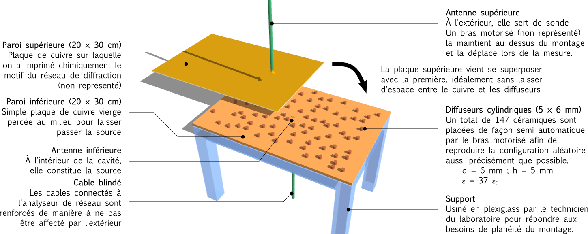
Le montage expérimental consiste essentiellement en une cavité de dimensions 300×200×5 mm³. Sa hauteur étant petite devant la longueur d'onde, on peut la considérer comme 2D.
On place les diffuseurs suivant la configuration calculée (voir la méthode détaillée ci-après) et on « referme » le système avec le réseau en guise de paroi supérieure. On cherche à éviter toute réflexion latérale qui viendrait perturber les modes localisés au centre, c'est pourquoi on laisse le système ouvert sur les côtés.
Une antenne est placée à l'intérieur, passant à travers la paroi inférieure, et émet un signal déterminé par l'analyseur de réseau auquel elle est connectée. La sonde quant à elle est fixée au bras motorisé pour venir se positionner au dessus du point de mesure.
L'analyseur de réseau effectue un balayage en fréquence a une position donnée et mesure la réponse du système fréquence par fréquence, au travers de la quantité S21, qui est le signal transmis de la source (antenne 2) à la sonde (antenne 1). Une acquisition consiste donc en un « scan » point par point. Un scan typique produit ainsi une matrice complexe de dimensions 60×40×3201 pour une résolution spatiale de 5×5 mm² et une gamme de fréquence allant de 3 à 9 GHz.
3.1 Travail numérique
Estimer ξ, modèle simplifié
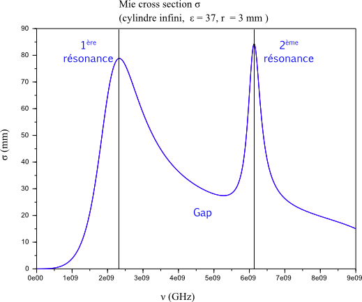
Pour les diffuseurs cylindriques notamment, on peut définir une section efficace de Mie (Mie cross section), σ, qui correspond au diamètre apparent du cylindre du point de vue de l'onde : aux fréquences de résonance du diffuseur celui ci paraîtra très grand pour l'onde. Ces résonances sont appelées résonances de Mie (voir fig. 3.1.1).
Bien qu'elles correspondent au comportement d'un diffuseur unique, l'expérience montre (cf. [2 & 3]) : que les résonances d'une distribution aléatoire de diffuseurs suivent un motif proche. Puisque notre but est de « piéger » l'onde électromagnétique, nous cherchons à nous placer proche de ces résonances, pour lesquelles les diffuseurs constituent un obstacle important à la propagation.
Les travaux précédents (cf. [2]) ont montré que des modes localisés avaient de bonne chance d’apparaître un peu avant la seconde résonance de Mie. Sur la résonance elle même, les modes sont nombreux et donc se recouvrent spatialement et spectralement : ils sont étendus. En s'éloignant un peu, on trouve des modes plus isolés dans le spectre, donc moins étendus, qui ont de meilleures chances d'être localisés.
On a alors une approximation pour la longueur de localisation ξ, de la forme ξestimée = A / σres, où A désigne l'aire de la section du cylindre et σres la section efficace de Mie à la résonance.
Il ne s'agit là que d'une estimation, mais elle nous donne un ordre de grandeur que l'on peut comparer à la taille du système pour savoir s'il y a une chance de localiser avec nos paramètres.
Des programmes pour calculer σ(ν) ayant déjà été écrits, ma première tâche fut de les faire tourner pour une série de matériaux proposés par des fabricants afin d'estimer la longueur de localisation que nous pourrions espérer. Le résultat de cette analyse ayant confirmé le choix de l'expérience précédente (ε = 37, d = 6 mm), et les matériaux à forte constante diélectriques s'étant avérés onéreux, nous avons emprunté les diffuseurs précédemment utilisé au laboratoire qui les possédait.
Lors des mesures (cf fig. 3.1.2) les deux résonances et le « gap » qui les sépare ont été observé comme attendu : la moyenne spatiale du champ électrique présente les mêmes résonances que la section efficace d'un diffuseur unique.
Produire et apprécier une configuration aléatoire
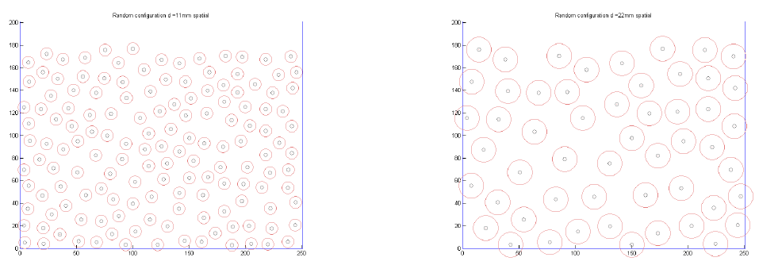
Lorsque l'on tire la configuration aléatoirement, on rejette les placements conduisant à des diffuseurs trop proches, qui ne laisseraient pas la place à un mode de se former. On impose donc qu'ils gardent une certaine distance entre eux. Une difficulté importante a été le choix de cette distance d'exclusion entre les diffuseurs.
Nous avons observé qu'une distance d'exclusion trop importante conduit à une trop forte régularité car cette contrainte les forcent à s'arranger de façon régulière. Or la régularité est quelque chose que nous voulons éviter car pour localiser, les fréquences de résonance de régions voisines doivent être aussi différentes que possible. Ainsi, la résonance reste locale lorsque l'on excite une région.
Cherchant a établir un critère, nous avons utilisé une analogie avec la cristallographie : si dexc devient trop grande, la distribution « cristallise » (voir fig. 3.1.3). Son spectre, obtenu par transformation de Fourrier (passage d'une représentation spatiale à une représentation spectrale) présente alors une tache sombre dont le diamètre décroit avec la distance d'exclusion (voir fig. 3.1.4).
Ce traitement nous donne ainsi un critère d'ordonnancement facile à quantifier.
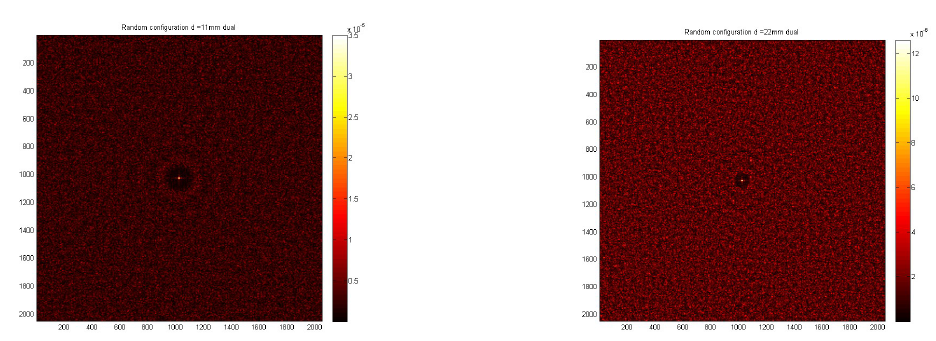
Cependant cette méthode est restée phénoménologique et nous nous sommes contentés de constater que nous parvenions à localiser pour une certaine gamme de distance d'exclusions (aux alentours de dexc=10 mm). Un développement ultérieur pourrait être d'interpréter plus précisément la présence de cette tache sombre et éventuellement de se donner un critère numérique permettant d'optimiser la distance d'exclusion. Mon stage ne s'est pas concentré sur cet aspect car nous connaissions déjà des distances d'exclusions pour lesquelles la localisation a lieu.
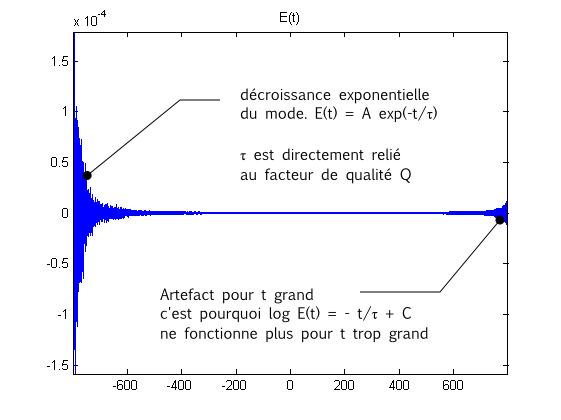
Facteur de qualité Q
On peut définir le facteur de qualité de la cavité Q, qui caractérise les pertes du système. Si elles sont importantes, l'énergie fuit le système rapidement, les modes ont donc des temps de vie courts et le facteur de qualité est mauvais. Plus spécifiquement, les modes suivent une décroissance exponentielle de la forme E(t) = A e-t/τ où τ est un temps de vie caractéristique du mode (voir fig 3.15) . On défini ainsi le paramètre adimensionnel : Q = 2ω0τ avec ω0 la fréquence autour de laquelle le mode est centré. Ainsi :
log(|E|) = - 2 ω0×t/Q + C
De la même manière qu'une fft nous permet de passer dans l'espace dual pour les distances, elle nous permet de passer de la représentation fréquentielle à celle temporelle, nous permettant de caractériser la décroissance des modes et d'en extraire le facteur de qualité.
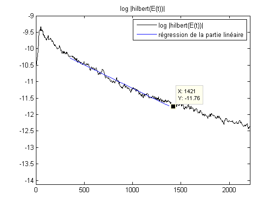
Le passage en temporel reconstitue ainsi la propagation de l'onde, qui est parfois plus facile à interpréter. Après une séquence de traitement du signal pour lui faire respecter les critères d’échantillonnage, on obtient la décroissance attendue (fig. 3.1.5). On récupère l'enveloppe, dont on veut caractériser la décroissance, en prenant le logarithme de la transformée de Hilbert du signal temporel (cf. fig 3.1.6). Le résultat obtenu peut être approximé par une régression linéaire sur une certaine portion dont la pente α nous donne le facteur de qualité :
Q = - 2 ω0 / α
La fréquence est évidemment mal définie ici. De plus on a effectué une moyenne sur tout l'espace, donc nous ne regardons pas vraiment le facteur de qualité d'un mode bien défini, mais plutôt une caractéristique moyenne de notre système, car l'objectif est d'optimiser les paramètres du réseau de diffraction (par lequel l'énergie fuit le système).
Simulations du champ pour une configuration donnée
Les travaux précédents, déjà évoqués, comportaient des simulations numériques qui permettaient de valider les résultats expérimentaux. La pertinence d'une telle démarche est particulièrement importante ici car j'ai souvent constaté comme il était facile de perturber la mesure : il suffit par exemple qu'une antenne touche l'une des parois conductrices de la cavité pour que la mesure n'ai plus aucun sens.
Au cours de mon stage, je n'ai pas réussi à aller au bout de cette démarche, ce qui m'a beaucoup manqué. Non seulement la comparaison ne peut être établie, mais cela m'aurait également permis de tester des configurations avant de lancer la cartographie du champ, qui est un processus relativement long (une dizaine d'heures) et ainsi rejeter d'emblée des essais sans chance de succès.
Le passage en temporel
Comme évoqué lors du calcul du facteur de qualité, une fft permet de reconstituer la propagation à travers le système à partir du signal fréquentiel donné par l'analyseur de réseau. Même si cette procédure n'apporte en elle même aucune information nouvelle, il s'agit d'un bon moyen de se faire une idée du comportement de l'onde dans notre système.
Les figures 3.1.7 à 3.1.10 montrent ainsi la transformée de Fourier du signal pour des temps croissants :
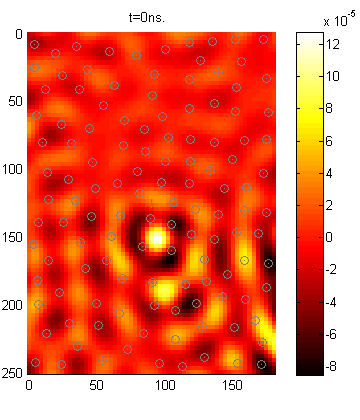
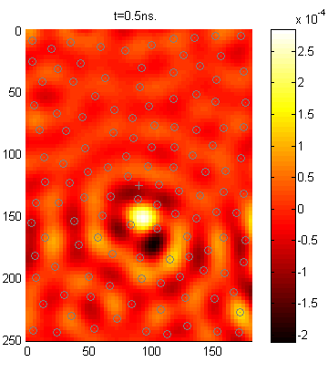
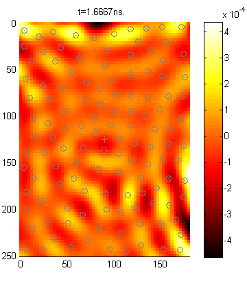
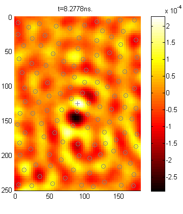
On peut voir le front d'onde partir de la source (fig. 3.1.7), rester quelques instants « piégé » par les diffuseurs (fig. 3.1.8) qui encerclent la source puis se propager dans la cavité : cela correspond aux pertes du mode localisé, qui ne dure pas éternellement et finis par fuir.
Quelques instants après, on peut voir le front d'onde être réfléchi sur les parois de la cavité (fig. 3.1.9), ce qui confirme que l'interface cavité/air constitue un saut d'impédance.
Enfin, après un temps plus long, le front d'onde ne présente plus de motif clairement identifiable et semble être totalement aléatoire (fig. 3.1.10).
3.2 Travail expérimental
Le montage
L'essentiel de mon stage était donc de réaliser le dit montage, ce qui ne fut pas toujours simple.
Après beaucoup d'évolutions, nous avons opté pour une source fixée au centre de la plaque inférieure et une sonde mobile au dessus, déplacée par un bras motorisé à deux axes ou trois axes (avec un troisième axe, le placement des diffuseurs est facilité mais un autre algorithme de placement permet de s'en passer).
De multiples petits ajustements étaient nécessaires : des serres joints sur les bords pour maintenir le contact cuivre-céramique à la verticalité de la sonde, il fallait contrôler chaque paramètre pour s'assurer que les mesures avaient un sens.
Notamment, être maître du déplacement du bras était primordial. En effet, la majorité des actions mécaniques de l'expérience est effectué par le bras motorisé.
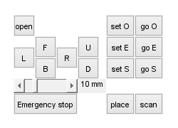
Ce dernier possède une bibliothèque de fonctions pour être piloté numériquement, qui peut s'interfacer sous Matlab. Les fonctions de déplacement les plus basiques (aller au point (x,y,z), effectuer une translation (dx,dy,dz) ) étaient déjà écrites et il a fallu construire à partir de cela des programmes qui calibrent les positions de l'origine et de la source, placent les diffuseurs et balaient la surface en attendant à chaque point de mesure que l'analyseur de réseau ai procédé à l'acquisition.
Après plusieurs semaines de familiarisation avec les instructions de contrôle et la géométrie du montage, qui a beaucoup évoluée, j'ai fini par écrire une interface graphique permettant de piloter le bras aisément.
Pour éviter toute catastrophe, j'ai également ajouté un bouton d'arrêt d'urgence qui apparaît automatiquement à l'écran pour les mouvements de grande ampleur.
Lorsqu'on lance enfin la cartographie (pour une dizaine d'heure) les programmes écrits sous Matlab se chargent de balayer la surface et l'analyseur de réseau effectue la mesure, dont les résultats sont stockés et enregistrés. L'interface graphique que j'ai écrite permet ensuite de balayer le spectre pour afficher la carte à une fréquence donnée.
Accessoirement, des programmes se chargent d'envoyer une notification par e-mail une fois le scan terminé ou en cas d'interruption.
Problèmes techniques
Une large part de mon temps durant ce stage a été consacrée à résoudre les multiples problèmes techniques que nous n'avions pas prévu initialement.
Il est rapidement apparu que la planéité du montage était à la fois critique et difficile à atteindre.
En effet, même une faible pente du support peut produire un écart de un à trois millimètres sur la longueur de la cavité. L'intensité mesurée par la sonde décroissant très rapidement avec la distance, les résultats s'en retrouvent complètement faussés.
Plusieurs méthodes ont été testées, comme l'utilisation d'un troisième axe (seuls deux sont nécessaires pour un scan de la cavité), vertical, afin de venir presser la plaque supérieure en chaque point. Mais mettre en œuvre cette idée s'avéra compliqué et une meilleure solution fut trouvée.
Notre problème était notamment du au fait que les plaques de cuivres finissaient par se courber sous l'effet du poids des éléments posés dessus. L'ajout d'un support épais (20 mm) et de pieds fixes en PMMA sous la cavité a fixé définitivement la planéité et la stabilité du montage. Le PMMA (Plexiglass) a en effet l'avantage d'être isolant (donc de ne pas perturber la mesure) et très rigide.
Un autre problème fut celui des réflexions latérales. Bien que notre système soit ouvert sur les côtés, le passage du milieu quasi 2D de la cavité à l'air libre constitue un brusque saut d’impédance, caractérisé par de fortes réflexions. Les travaux précédents avaient employé une mousse absorbante pour envelopper la cavité et supprimer aux mieux ces réflexions. Une fois l'onde arrivée dans le milieu absorbant, elle n'en ressort en principe plus. Un temps assez important a été consacré a tenté de reproduire cette méthode, mais cela présentait plusieurs désavantages : cela rendait plus compliqué l'accès aux diffuseurs et nécessitait de revoir les trajets du bras, en particulier sans le troisième axe.
D'une manière générale, la simplicité recherchée était perdue en ajoutant des larges bandes de mousses tout autour du montage.
Enfin, plusieurs semaines de mon stage ont été consacrées à tenter de remplacer la paroi inférieure par un réseau de diffraction également, afin de pouvoir placer la source à l'extérieur de la cavité et ainsi observer l'influence de son déplacement (a priori important pour des modes localisés !). Mais cela ne s'est pas révélé faisable en pratique car le signal obtenu avec une source à l'extérieur de la cavité devenait rapidement trop faible pour être distingué du bruit.
Réalisation de la grille supérieure
Le réseau de diffraction, déjà évoqué, qui remplace la paroi supérieure de la cavité, est régi essentiellement par deux paramètres : sa période spatiale p et la fraction surfacique occupée par le conducteur, f = a²/p² où a est le côté d'une ouverture carrée (voir fig 3.2.3). Ces paramètres permettent notamment de calculer le facteur de qualité Q de la cavité vide.
Pour produire le réseau, on utilise une plaque de cuivre simple face, que l'on insole aux ultra-violets (voir fig 3.2.4) en utilisant un calque pour discriminer les régions qui doivent rester conductrices de celles que l'on attaque.
Les UV arrachent ainsi une première couche de cuivre, ce qui le rends plus réactif. La plaque est ensuite plongée dans un bain de soude où les parties pré-sensibilisées sont détériorés et deviennent définitivement isolantes.
Cette technique présente l'avantage d'être relativement simple et rapide. Le résultat dépend cependant assez fortement de la minutie de l'opérateur et il est difficile de descendre en deçà du millimètre sans être limité par la résolution de l'imprimante.
L'article [4] explique comment Q est calculé de façon théorique à partir de a et p pour le cas d'une cavité vide et fermée sur les bords (par un conducteur). Ma première tache expérimentale fut ainsi de vérifier les propriétés de la cavité dans ces circonstances. Pour ce faire, un cadre en aluminium a été placé autour de la cavité et le champ a été cartographié pour différentes valeurs de a et p. Les valeurs de Q ainsi obtenues, de l'ordre de quelques centaines, étaient en accord avec les valeurs théoriques calculées par Matthieu.
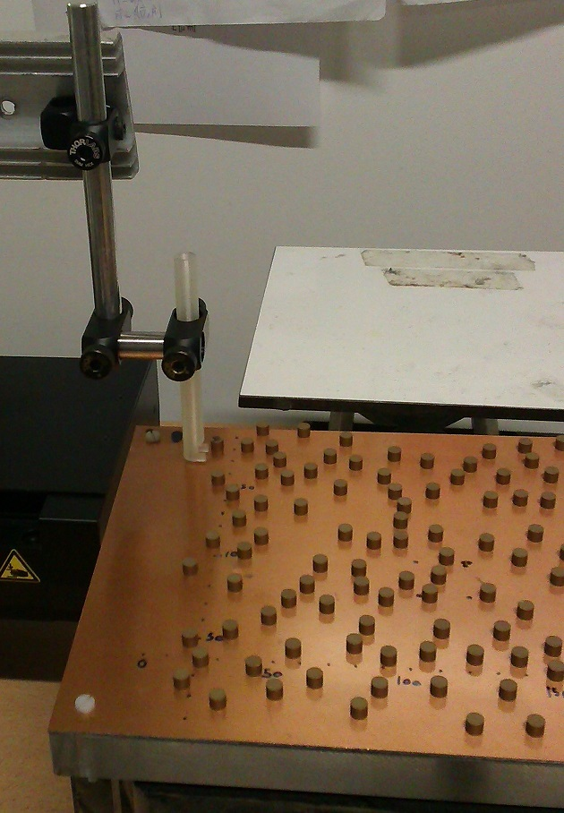
Placement des diffuseurs
Là encore, j'ai écrit un programme pour automatiser cette étape. Un tube imprimé en 3D est amené au dessus des positions des diffuseurs et l'opérateur y fait glisser un cylindre avant de donner le signal à l'ordinateur de se placer à la position suivante (cf. fig. 3.2.5)
Le diamètre du tube étant de 7 mm et celui des cylindres de 6 mm, la position des céramiques est donc connue avec une incertitude de 0,5 mm, soit ~ 0,01λ. La précision n'est pas un luxe ici, car l'accord entre résultats expérimentaux et numériques est très sensible à la position des éléments du système.
Une telle précision aurait été très difficile et fastidieuse à obtenir manuellement. De plus nous ne voulions pas fixer les cylindres à la plaque de quelque manière que ce soit, pour se donner la liberté de tester aisément une nouvelle configuration.
3.3 Résultats : les modes localisés observés
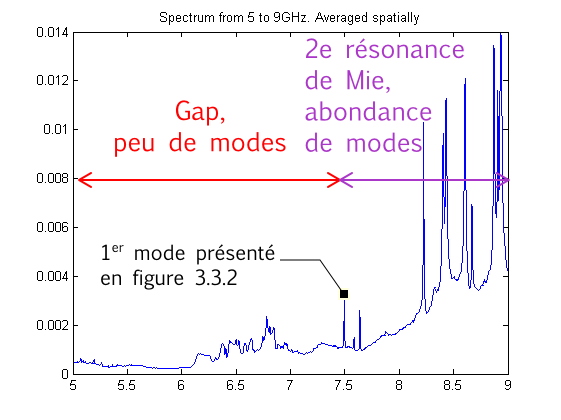
Une fois la mesure effectuée, on identifie les pics dans le spectre moyenné de la cavité (cf. fig 3.3.1). Ils correspondent à des résonances, ou modes. Tel qu'expliqué précédemment, les modes sont abondants au niveau des résonances de Mie et rares autrement.
Si l'on se place trop proche de la résonance de Mie (approximativement 8-9 GHz ici), la densité de modes est tellement importante que ceux ci ne forment pas des pics bien isolés, mais se recouvrent mutuellement.
En s'éloignant un peu en revanche, on trouve des modes beaucoup moins intenses mais mieux isolés.
Si l'on regarde la carte de champ pour les fréquences avoisinantes, on obtient parfois de beaux modes localisés tels que ceux présentés en fig. 3.3.2.
Les modes que nous avons observé (cf. fig 3.3.2) étaient plus larges qu'attendu, à la fois spatialement et spectralement. Cela correspond notamment au fait que plusieurs paramètres restent encore à optimiser (comme la distance d'exclusion dexc entre les diffuseurs) ou a mieux contrôler (comme la rigidité de la plaque supérieure ou la présence de réflexions qui peut être limitée en plaçant de l'absorbant sur les côtés).
Cependant, le phénomène de localisation est bien présent : pour des fréquences proches de la deuxième résonance de Mie, l'onde ne se propage pas de façon aléatoire dans toute la cavité mais reste globalement confinée dans une région d'une longueur caractéristique de l'ordre de quelques centimètres.
On peut noter un décalage vers les hautes fréquences par rapport à ce qui était attendu (les modes localisés interviennent à 7-8 GHz au lieu de 6 GHz). Cela est du au contrôle imparfait de la plaque supérieure, déjà évoqué : celle ci a tendance à se courber, laissant de l'espace entre la plaque et les diffuseurs. Le « diffuseur équivalent » (céramique + air) obtenu à cet endroit a donc un indice plus faible, ce qui correspond à une fréquence plus élevée :
ν' = c'/λ = n' c / n λ = (n'/n) ν > ν
Ce problème a été corrigé par la suite (voir section « travail expérimental ») mais les modes obtenus n'ont jamais été aussi convaincants qu'avec ce jeu de données.
4. Bilan personnel et conclusion
Techniques apprises
Durant mon stage, j'ai eu a me familiariser avec de multiples techniques, autant expérimentales qu'informatiques : impression chimique d'un motif sur une plaque de cuivre (PCB), utilisation d'un analyseur de réseau, impression 3-D, contrôle d'axes motorisés, interfaçage et traitement de données sous Matlab, pilotage de la manipulation à distance via Team Viewer ...
Bien qu'à chaque fois guidé par mon encadrant ou un doctorant, j'ai du apprendre à m'en servir de façon autonome ce qui s'est révélé très formateur : il s'agit d'outils et de compétences qui peuvent s'employer dans d'autres contextes de recherche.
En particulier, la large part de ce stage effectuée en s'aidant de Matlab était une excellente occasion de mettre en pratique mes connaissances de Scilab fraîchement acquises à l'UPMC.
Aperçu de la recherche
Sur un autre plan, j'ai été très enthousiasmé de découvrir toutes sortes d'aspects de la recherche auxquels je n'avais jamais été confronté.
Au cours de mon stage, j'ai participé aux réunions de l'équipe pour présenter ses résultats et difficultés et écouter ceux des autres ou pour peaufiner un article avant de le soumettre à une revue. C'était l'occasion pour moi d'avoir un aperçu du fonctionnement de la recherche et du processus de publication et de la manière dont est construit et affiné un article.
Enfin, c'était la première fois que j'étais complètement « maître » de ma propre manipulation. Il ne s'agissait pas d'un montage déjà tout fait au protocole complètement fixé et j'ai eu à faire face à de multiples difficultés techniques, écrire tous les programmes de contrôle, interpréter les incohérences des résultats et réfléchir à des solutions par moi même. Bien que difficile et parfois fatiguant, c'était un incroyable défi que j'ai adoré relevé et je regrette de n'avoir pas eu plus de temps pour me consacrer à la la multitude de points à améliorer sur ce montage.
Ces dix semaines ont été captivantes par bien des aspects : le stage en lui même était passionnant, mais également les membres du laboratoire, les réunions, les séminaires …
Bilan sur l'avancement du stage - Si c'était à refaire
L'objectif principal d'observer la localisation d'Anderson avec un protocole simple et automatisable a été atteint (avec beaucoup de satisfaction !). Mais beaucoup de choses restent à faire sur ce montage : améliorations, optimisations, perturbation des modes ... et j'espère que mes efforts de conception du montage et de documentation des programmes permettront à la prochaine personne qui travaillera sur ce montage d'aller plus loin que moi.
Malgré tout, j'ai passé beaucoup de temps à rester coincé sur des problèmes simples qui m'ont fait perdre beaucoup de temps. Après discussion avec mon responsable, nous sommes tombé d'accord sur la conclusion que je n'avais pas osé poser assez de questions durant mon stage.
J'ai souvent eu trop à cœur de me débrouiller seul pour reconnaître que d'autres avaient déjà la solution à mon problème, ce qui m'aurait permis de me concentrer sur d'autres aspects et aller plus loin.
Conclusion
Finalement, cette expérience a été très positive ! J'ai adoré ce stage, les questions physiques qu'il soulevait et les problèmes techniques à résoudre. C'était un vrai challenge car je manquais souvent du bagage théorique nécessaire mais j'ai toujours trouvé quelqu'un pour me guider.
Avec toutes les nouveautés et toutes les rencontres qu'il m'a apporté, ce stage à pleinement confirmé et renouvelé mon désir de faire de la recherche mon métier.
La lecture des articles [1] à [5] peuvent être utile à la pleine compréhension de ce rapport.
L'article [6] présente la direction vers laquelle cette démarche veut tendre.